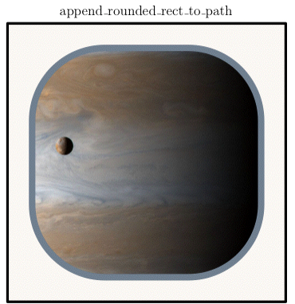

class Tioga::Rectangles
These are the methods for creating and using rectangular paths for PDF graphics operations.
Public Instance Methods
Calls #append_rect_to_path with the current frame rectangle.
# File lib/Tioga/Rectangles.rb, line 34 def append_frame_to_path end
Add a rectangle with corners at (x, y), (x + width, y), (x + width, y + height), and (x, y + height).
# File lib/Tioga/Rectangles.rb, line 11 def append_rect_to_path(x, y, width, height) end
Like #append_rect_to_path, but with corners rounded with curvatures given by dx and dy.
The illustration shows a rounded rectangle stroked and used as a clipping path for showing the image.

# File lib/Tioga/Rectangles.rb, line 73 def append_rounded_rect_to_path(x, y, width, height, dx, dy) end
Calls #append_rect_to_path followed by clip.
# File lib/Tioga/Rectangles.rb, line 27 def clip_rect(x, y, width, height) end
Calls #append_rounded_rect_to_path followed by clip.
# File lib/Tioga/Rectangles.rb, line 77 def clip_rounded_rect(x, y, width, height, dx, dy) end
Calls #append_frame_to_path followed by clip.
# File lib/Tioga/Rectangles.rb, line 62 def clip_to_frame end
Calls #append_frame_to_path followed by fill_and_stroke.
# File lib/Tioga/Rectangles.rb, line 55 def fill_and_stroke_frame end
Calls #append_rect_to_path followed by fill_and_stroke.
# File lib/Tioga/Rectangles.rb, line 23 def fill_and_stroke_rect(x, y, width, height) end
Calls #append_rounded_rect_to_path followed by fill_and_stroke.
# File lib/Tioga/Rectangles.rb, line 89 def fill_and_stroke_rounded_rect(x, y, width, height, dx, dy) end
Calls #append_frame_to_path followed by fill.
# File lib/Tioga/Rectangles.rb, line 48 def fill_frame end
Calls #append_rect_to_path followed by fill.
# File lib/Tioga/Rectangles.rb, line 15 def fill_rect(x, y, width, height) end
Calls #append_rounded_rect_to_path followed by fill.
# File lib/Tioga/Rectangles.rb, line 81 def fill_rounded_rect(x, y, width, height, dx, dy) end
Calls #append_frame_to_path followed by stroke.
# File lib/Tioga/Rectangles.rb, line 41 def stroke_frame end
Calls #append_rect_to_path followed by stroke.
# File lib/Tioga/Rectangles.rb, line 19 def stroke_rect(x, y, width, height) end
Calls #append_rounded_rect_to_path followed by stroke.
# File lib/Tioga/Rectangles.rb, line 85 def stroke_rounded_rect(x, y, width, height, dx, dy) end